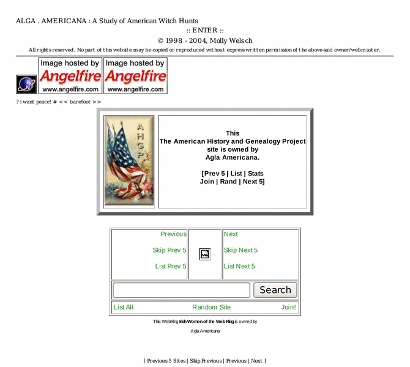

Previewing: Agla Americana Previewing: Agla Americana 
Use the left/right red arrow controls to navigate through this ring - Click the preview image to visit the member site.

A website chronicling American witch hunts, whether the pursued are "witches," or of another name. In the middle of expanding.
Agla Americana owned by:
 moonscar moonscar
A member of the original webring since 10/21/2011.
|
|